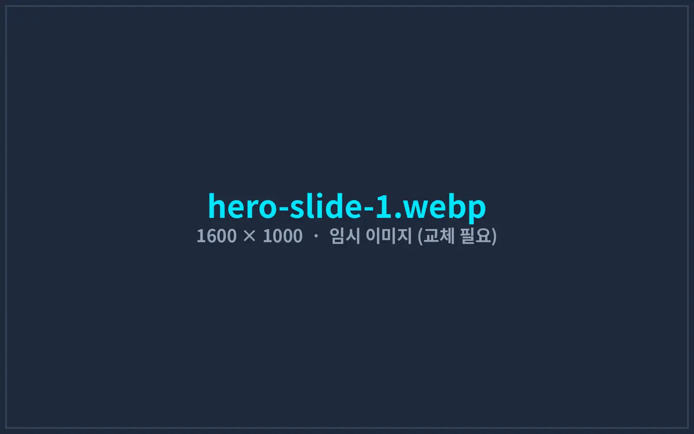

사람이 반복하던 일을
소프트웨어가 대신합니다
콘텐츠 제작 파이프라인부터 생산라인 계측 장비, 증권사 API 자동매매, 비전 AI 불량 검사까지. 현장의 장비·데이터·AI를 하나의 시스템으로 연결해 실제로 매일 쓰이는 자동화를 만듭니다.
- 25년+
- 엔지니어링·IT 경력
- 4개
- 산업 분야 구축 레퍼런스
- 1:1
- 대표 엔지니어 직접 수행


비용은 낮추고 생산성은 높이는 4가지 핵심 기술
각 기술은 실제 현장에 납품해 운영 중인 시스템에서 검증했습니다. 필요한 기술만 골라 조합하거나, 기존 설비·프로그램에 붙여서 도입할 수 있습니다.
하이퍼오토메이션
기획서·대본 한 장으로 이미지 생성, 음성 녹음, 자막, 편집 프로젝트까지 이어지는 반복 업무를 한 번에 처리합니다.
자세히 보기이기종 장비 연동 · 중앙 모니터링
RS-232, Modbus, SCPI, PLC 등 서로 다른 장비를 하나의 프로그램으로 제어하고 모든 측정값을 자동 기록합니다.
자세히 보기금융 데이터 · 자동매매 시스템
증권사 API로 국내·미국 시세를 실시간 수신하고, 정해진 전략과 리스크 규칙에 따라 주문을 자동 실행합니다.
자세히 보기비전 AI 검사 · 인지형 제어
산업용 카메라와 딥러닝으로 불량을 판정하고, 생산량 카운팅·DB 기록·음성 경보까지 현장 제어와 연결합니다.
자세히 보기현장에서 검증된 시스템 구축 레퍼런스
도입 전후를 같은 기준으로 측정한 결과만 공개합니다. 고객사 요청에 따라 회사명은 업종으로 표기했습니다.

교육 콘텐츠 채널 운영사 — 영상 제작 자동화(오토튜브)
대본 한 장으로 이미지 생성, AI 음성 녹음, 자막 정렬, CapCut 편집 프로젝트까지 자동으로 이어지는 제작 파이프라인을 구축했습니다.

음향기기 ODM 제조사 — 7종 계측 장비 통합 검사 시스템
오디오 분석기, 전원공급기, PLC, 바코드, 라벨 프린터를 하나의 검사 프로그램으로 묶고 시리얼 번호별 측정 데이터를 자동 기록합니다.

투자법인 — 키움증권 국내·미국 주식 자동매매 시스템
국내장과 미국장을 하나의 프로그램이 24시간 관제합니다. 스크리너 조건 충족 시 분할 주문, 손절·일일 손실 한도를 자동 집행합니다.

식품 제조 공장 — 컨베이어 비전 AI 불량 검사 · 생산량 카운팅
포장 라인 3개에 카메라와 딥러닝 검사를 적용해 실링 불량·이물·인쇄 누락을 자동 배출하고, 생산 수량과 불량 이력을 DB에 기록합니다.
도입은 작게 시작해 검증 후 확장합니다
처음부터 전체 시스템을 만들지 않습니다. 가장 효과가 큰 공정 하나로 파일럿을 진행하고, 측정된 결과를 보고 확대 여부를 결정합니다.
현장 진단
1주 · 무료현재 업무 흐름, 사용 장비·프로그램, 병목 구간을 확인하고 자동화 우선순위와 예상 효과를 정리해 드립니다.
설계 · 프로토타입
2~3주실제 장비·데이터로 핵심 기능만 먼저 동작시켜 보고, 화면 구성과 판정 기준을 함께 확정합니다.
개발 · 현장 적용
4~12주파일럿 라인·채널에 먼저 적용해 도입 전후 지표를 측정합니다. 작업자 교육과 매뉴얼을 함께 제공합니다.
안정화 · 유지보수
3개월 무상납품 후 3개월간 무상 안정화를 지원하고, 이후에는 원격 점검·기능 개선을 포함한 유지보수 계약을 선택할 수 있습니다.
현장을 아는 엔지니어가 직접 만듭니다
영업 담당자와 개발자가 따로 움직이지 않습니다. 첫 미팅부터 납품, 유지보수까지 같은 엔지니어가 책임집니다.
제조 현장 경험
한·중 ODM 사업으로 음향기기 양산 공장을 직접 운영하며 생산라인·검사 공정·품질 클레임 대응을 경험했습니다. 현장 작업자가 실제로 쓸 수 있는 화면을 만듭니다.
자체 제품을 운영하는 개발사
유튜브 제작 자동화 프로그램 ‘오토튜브 Pro’를 직접 개발·판매하고, 자사 유튜브 채널 제작에도 매일 사용합니다. 설치·업데이트·라이선스까지 운영해 본 경험이 납품 품질로 이어집니다.
데스크톱부터 웹, AI까지 한 번에
C#/.NET 데스크톱 프로그램, 장비 통신, 웹 대시보드, 로컬 GPU AI 모델까지 한 팀에서 개발하므로 시스템 사이의 연결 비용과 책임 공백이 없습니다.
주요 개발 기술
- C# / .NET 8
- WinForms · WPF
- WebView2
- Python
- ONNX Runtime · TensorRT
- YOLO 객체 검출
- Whisper 음성 인식
- Qwen3-TTS
- Gemini API
- Modbus RTU/TCP
- RS-232/485 시리얼
- SCPI (VISA)
- Mitsubishi MC Protocol
- 키움증권 Open API
- WebSocket
- MS SQL Server
- PostgreSQL · SQLite
- Cloudflare R2
- Google Apps Script
자동화하고 싶은 업무를
알려주세요
현재 어떤 작업을 어떻게 하고 계신지 적어주시면, 대표 엔지니어가 직접 검토한 뒤 자동화 가능 범위와 예상 기간·비용을 회신드립니다.
- 영업일 기준 1일 이내 회신
- 1주 무료 현장 진단 (현장 방문 또는 원격)
- 요청 시 NDA(비밀유지계약) 체결 후 상담
메일로 직접 문의: contact@aibaselab.com